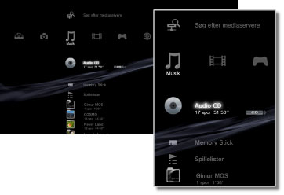

Musik > Musikkategori
Musikkategori
Følgende ikoner vises under  (Musik). De viste ikoner afhænger af brugsbetingelserne.
(Musik). De viste ikoner afhænger af brugsbetingelserne.

 |
(Titelnavn) | Vis det lille kontrolpanel. Dette ikon vises kun, når der afspilles musikindhold. |
|---|---|---|
 |
Søg efter mediaservere | Dette ikon betyder, at du kan starte en søgning efter DLNA-medieservere, der er tilsluttet samme netværk. |
 |
Medieserver | Dette ikon betyder, at du kan oprette forbindelse til DLNA-medieservere og afspille gemt musik. Det viste ikon afhænger af servertypen. |
 |
(titelnavn) | Afspil en Super Audio CD. |
 |
(CD-titel) | Afspil en lyd-CD. |
 |
Data Disk | Dette ikon betyder, at du kan afspille musikfiler, der er gemt på kompatible optagemedier, f.eks. en cd-r eller dvd-r. |
|
DSD Disk | Dette ikon betyder, at du kan afspille musikfiler i DSD-format, der er gemt på kompatible diskmedier, f.eks. en dvd-r. |
 |
Memory Stick™ | Afspil musikfiler, der er gemt på Memory Stick™-medier.* |
 |
SD Memory Card | Afspil musikfiler, der er gemt på et SD Memory Card.* |
 |
CompactFlash® | Afspil musikfiler, der er gemt på CompactFlash®.* |
 |
PSP™ (PlayStation®Portable) | Afspil musikfiler, der er gemt på et PSP™-systems Memory Stick™-medier. |
 |
PSP™ (PlayStation®Portable) | Afspil musikfiler, som er gemt i PSP™-go systemets systemlager. |
 |
DigitalKamera | Afspil musikfiler, der er gemt i et digitalkamera. |
 |
WALKMAN®/ATRAC Audio Device (WALKMAN®) | Dette ikon betyder, at du kan afspille musikfiler, der er gemt på en WALKMAN®/ATRAC Audio Device (WALKMAN®). |
 |
ATRAC Audio Device | Dette ikon betyder, at du kan afspille musikfiler, der er gemt på en ATRAC Audio Device. |
 |
USB-enhed | Afspil musikfiler, der er gemt på en USB-lagerenhed. |
| Spillelister | Dette ikon betyder, at du kan oprette spillelister eller redigere eller afspille oprettede spillelister. | |
 |
(mappe) | Dette ikon vises for mapper, der er oprettet på lagermediet vha. en PC. |
| (filer, der er gemt på systemlageret) | Afspil musikfiler, som er gemt på PS3™-systemets systemlager. Hvis der er billeddata til rådighed, vises der miniaturebilleder. |
| * |
Visse modeller af PS3™-systemet kræver en bestemt USB-adapter (medfølger ikke) ved brug af lagermedier. Hvis lagermedier bruges sammen med en USB-adapter, vises de som |
|---|
 (USB-enhed).
(USB-enhed).Tips
- Yderligere oplysninger om DLNA findes i denne vejledning under
 (Indstillinger) >
(Indstillinger) >  (Netværksindstillinger) > [Mediaserverforbindelse].
(Netværksindstillinger) > [Mediaserverforbindelse]. - I sjældne tilfælde kan det ske, at diske eller andre medier ikke fungerer, når de afspilles på dit PS3™ system. Dette skyldes primært variationer i fremstillingsprocessen eller i softwarekodningen.
- Når der sendes lyd fra Super Audio CD'er fra systemets DIGITAL OUT-stik (OPTICAL), sker der en simpel afspilning (afspilning ved 44,1 kHz med 16 bit).
Vigtigt
Ikke alle PS3™-systemer kan afspille Super Audio CD'er. Yderligere oplysninger findes under [Understøttede disktyper].